Published: 2024-04-08
Source link: https://www.cnphotos.net/academy/show-169.html
KINGJOY Technology is a national high-tech enterprise that joins design, research, production, and sales. As a well-known brand in Guangdong, it is known at home and abroad. The company has a standardized production base that focuses on camera gear and accessories. It also holds more than 200 core intellectual property rights and patents, and has won many top honors. Twenty years of innovation have given the KINGJOY brand rich experience and a strong reputation in markets at home and abroad. Its products sell to more than 50 countries and regions around the world, and it has built long-term, stable partnerships with many international brands.
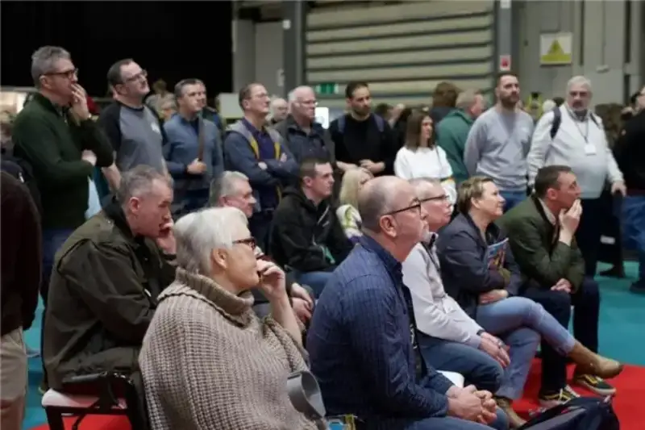
At the photography gear show in Birmingham, England, KINGJOY was the center of attention for its fine products and innovative technology. What drew the eye was Marcus, a well-known British landscape photographer and a senior KINGJOY product tester and brand ambassador. He shared his own views on choosing camera gear. He praised the A88 tripod made just for him, and gave high marks to the quality and stability of KINGJOY tripods.
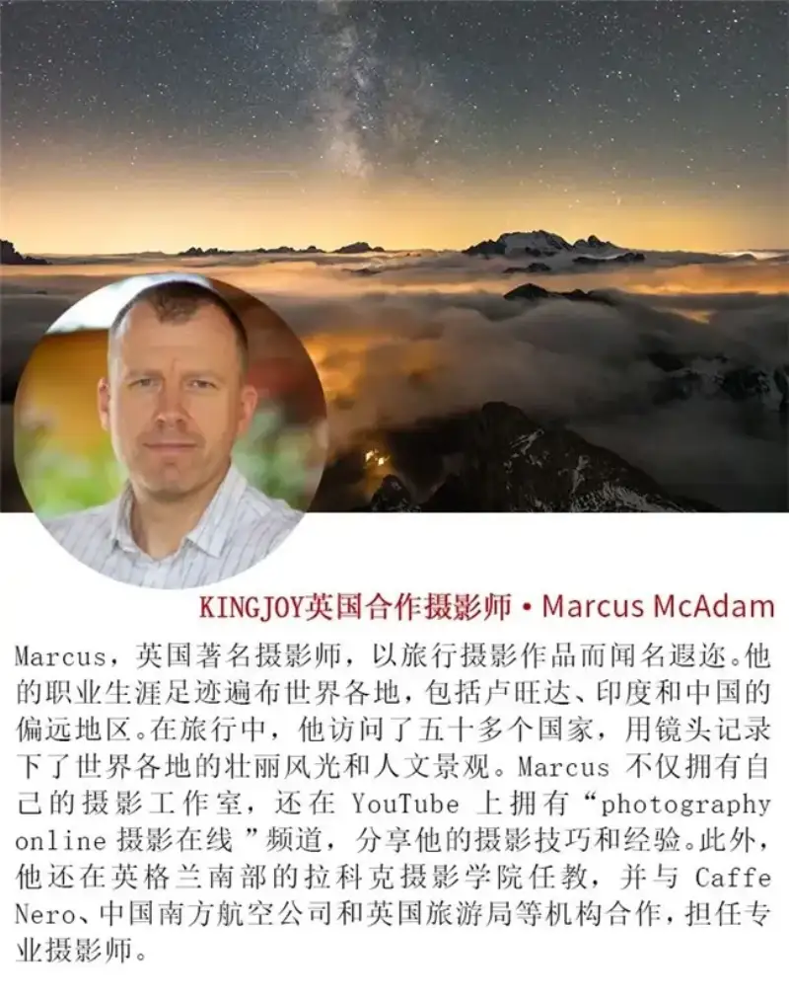
MARCUS and the KINGJOY Tripod: A Bond That Lasted
It Began with a Chance Meeting
Marcus has very high standards when he chooses camera gear, especially tripods. His bond with the KINGJOY tripod began by chance. Seven years ago, when he was looking for a new tripod, he met a Chinese-American photographer who used KINGJOY gear. The solid look and strong performance of that tripod caught his eye at once.
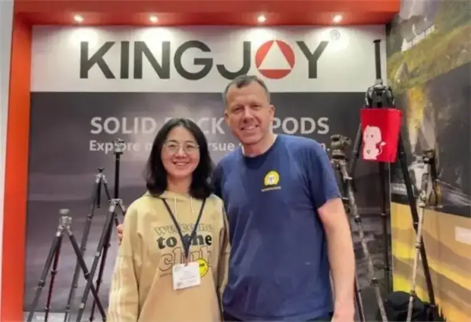
Out of curiosity, Marcus contacted KINGJOY and reached Ms. Joy. Her warm service left a deep impression on him. She not only gave him a tripod to try, but also answered all his questions patiently. Marcus said he needed at least two years of use to truly test the quality of the tripod.
Marcus often uses a range of medium-format and large-format cameras. His largest is an 8 by 20 inch camera. This camera is moderate in weight, but in wind it needs an extremely stable tripod to keep the shot steady.
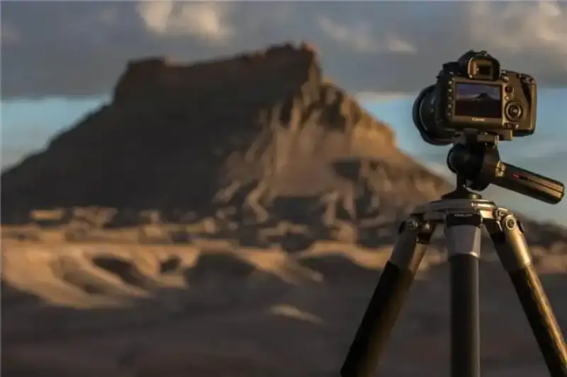
The size, stability, and load capacity of the KINGJOY A88 tripod fully met his needs. Even in strong wind, it held the camera steady, so that every photo captured the truest, clearest image.
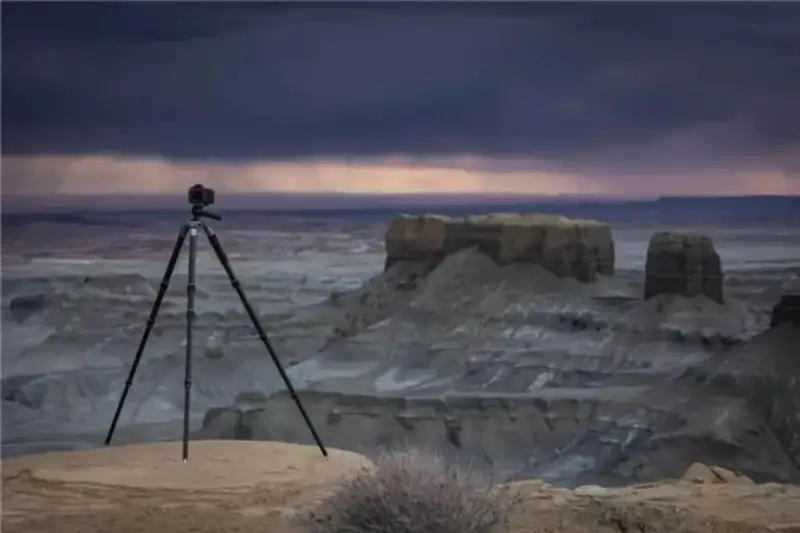
Over two full years, Marcus carried this tripod across oceans and through deserts, and put it through all kinds of extreme conditions.
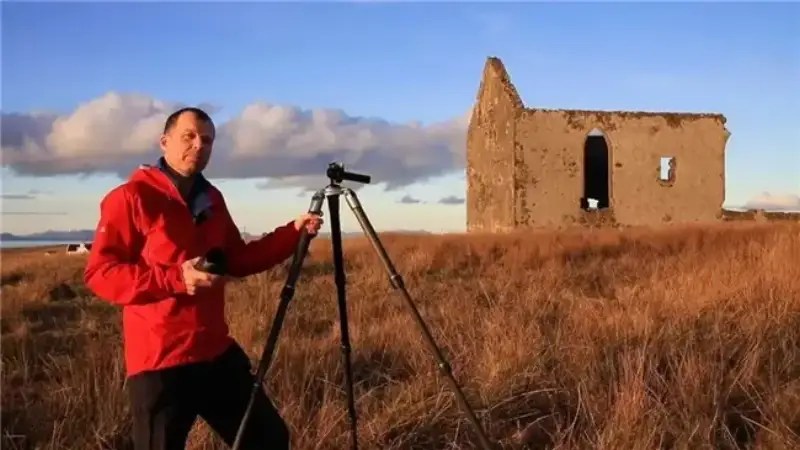
The load capacity of the KINGJOY A88 tripod is especially strong. It uses aircraft aluminum and ten layers of carbon fiber, with fine workmanship, to ensure its excellent load performance. Whether it carries a huge camera or other heavy gear, the A88 supports it with ease. The photographer does not have to worry about the weight, and can give full attention to the work.
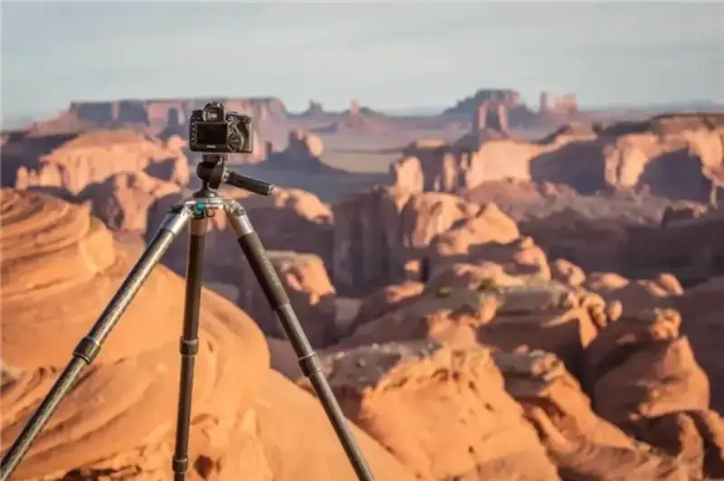
Remarkably, this tripod stays like new even when it is soaked in seawater or exposed to blowing sand.
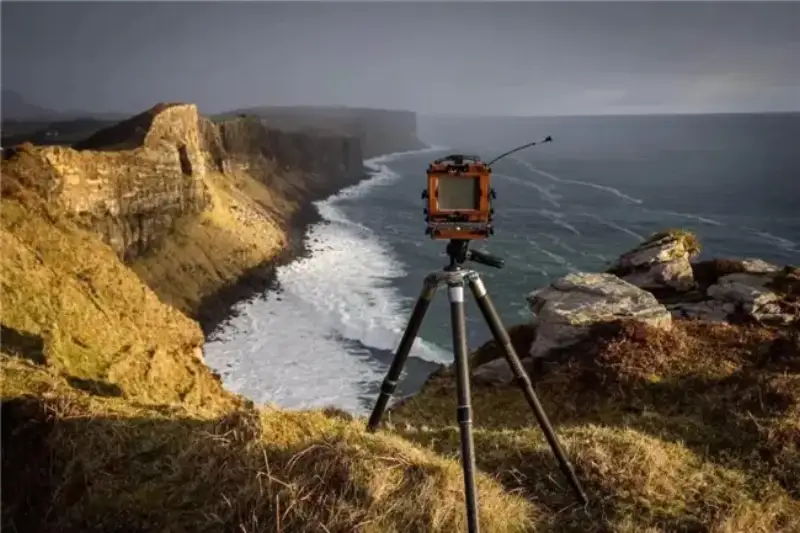
Beyond load and stability, the A88 tripod has practical features such as a quick-lock device and non-slip feet. These add to its usefulness and ease.
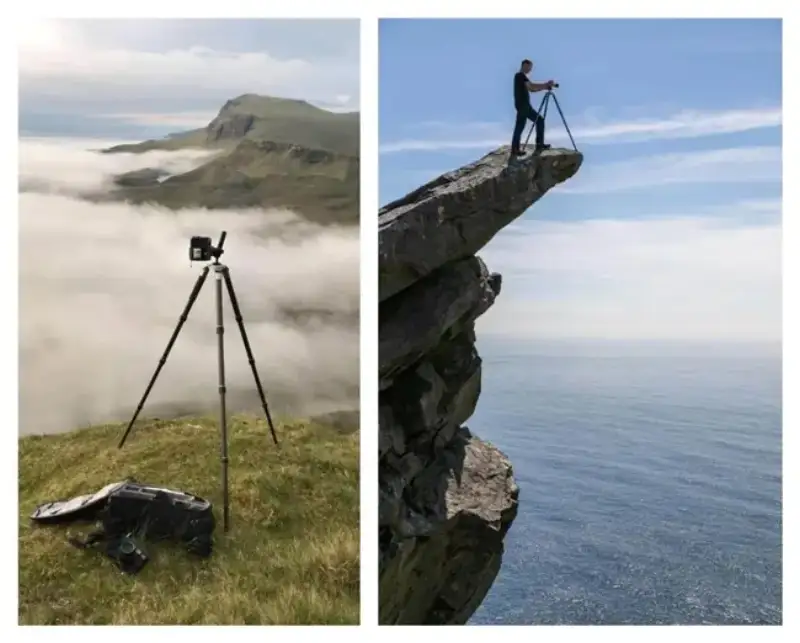
These features let the photographer quickly and accurately adjust the height and angle of the tripod, and work with more ease during the shoot.
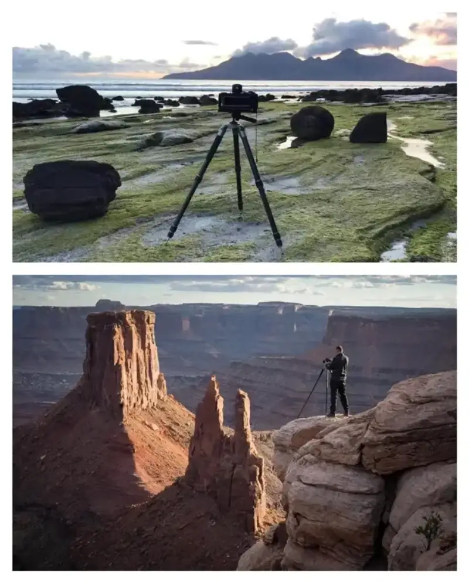
Marcus gave high marks to the stability, durability, and value of the KINGJOY tripod, and had the honor of becoming a KINGJOY brand ambassador. For seven years, he has kept using the same tripod KINGJOY first sent him. This alone proves its fine quality and its strong value for use.
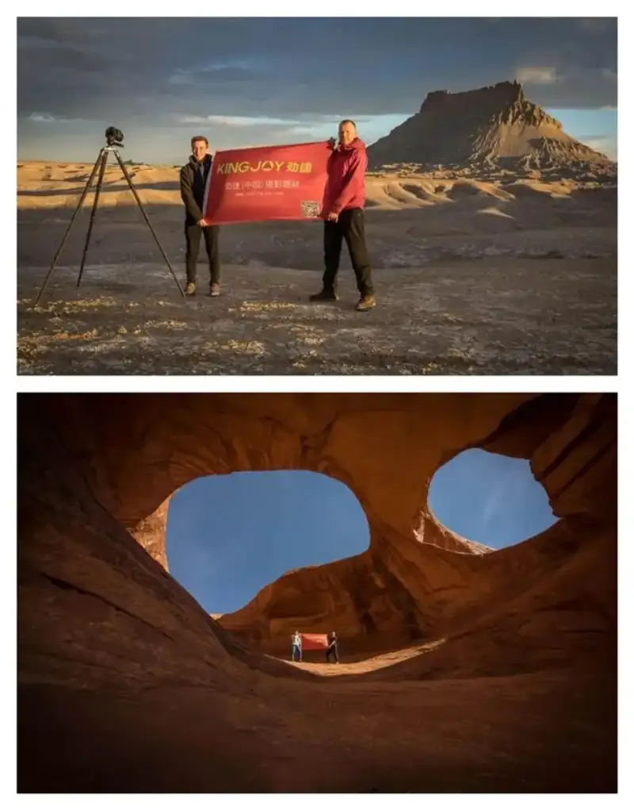
Marcus's Representative Photographic Work
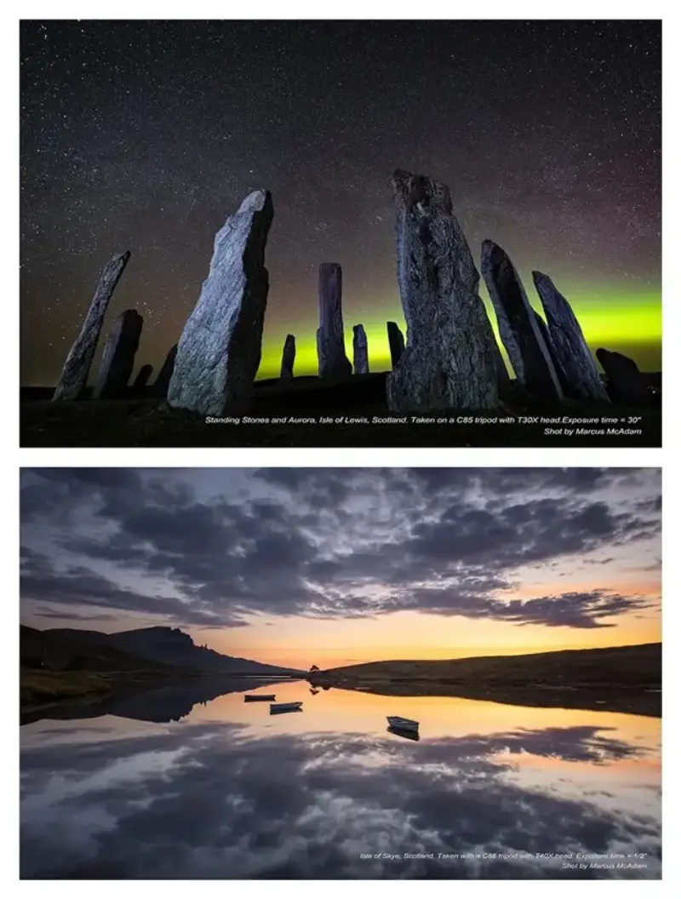
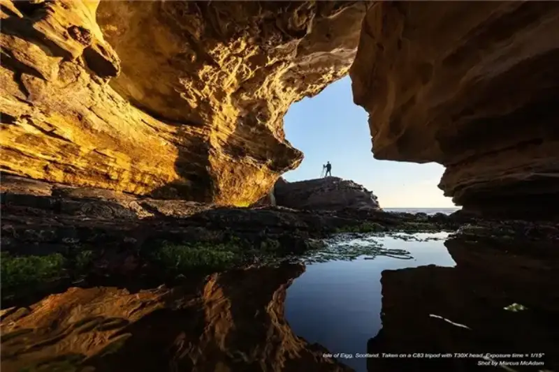
This interview shows the skill and the own views that Marcus brings as a photographer. It also gives more people a deeper look at KINGJOY tripods. As camera technology keeps developing and innovating, we believe a Chinese brand like KINGJOY, which values quality and pursues innovation, will keep shining in the international photo market. It will bring a better shooting experience to more photographers. At the same time, we look forward to Marcus sharing more of his notes and stories, and bringing us more great work and insight.